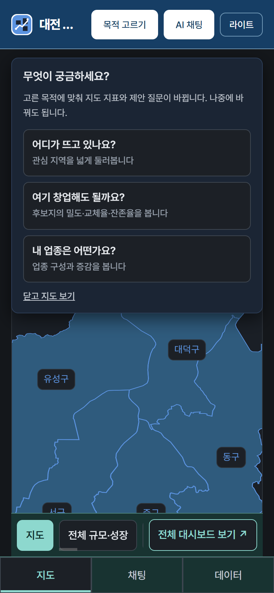
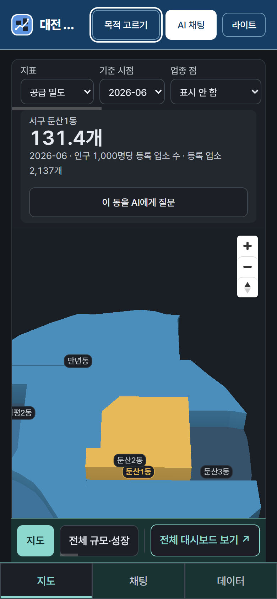
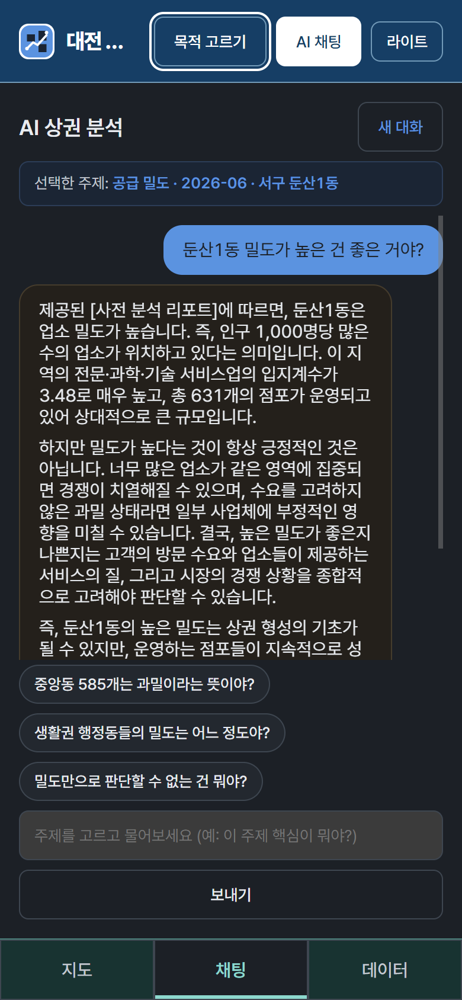

하단 탭으로 지도 · 채팅 · 데이터를 오갑니다. 세 화면 모두 390 × 844 실제 배포본이며, 합성하지 않았습니다.

목적을 먼저 고른다
고른 목적에 맞춰 지도 지표와 제안 질문이 바뀝니다. 건너뛸 수 있고 언제든 되돌아갑니다.

지도에서 동을 고른다
고른 동의 수치가 화면에서 가장 크게 섭니다 — 131.4개, 그 아래 한 줄로 근거를 답니다.

AI가 한계까지 답한다
“둔산1동 밀도가 높은 건 좋은 거야?”에 “항상 긍정적인 것은 아닙니다”라고 답하고, 무엇을 더 봐야 하는지 말합니다.